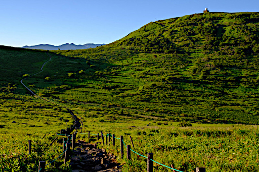
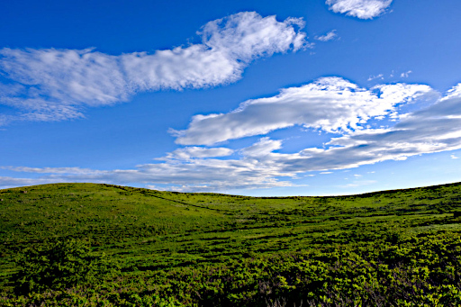
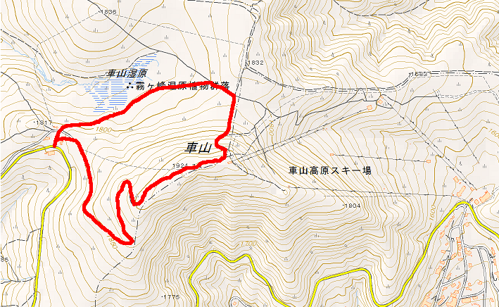

先日吹田市の万博記念公園に写真の撮影に行ってきましたが、その帰りに荷物の重さ (約 10kg) と疲労が体幹機能障害の症状を悪化させて両手で杖をついた状態でも左右にフラフラとしてしまいまっすぐ歩くことができないことを書きました。もちろん舗装された道でです。
それで思ったのですが、登山再開の最初に乗鞍岳剣ヶ峰を目標とするのは無理があるなと。左右にふらついてふらつていしまいそれを抑えるためには脚を左右に出して体を支えて転倒を防ぐ必要があるわけですが、脚を出した先が不安定な石の上だったりすると転倒して骨折だとか、転倒して滑落だとかそういった事態も想定されるわけです。なので最初は転倒しても致命的になりにくい子供でも登れる霧ヶ峰車山に変更しようと考えたわけです。最悪リフトで降りることもできますし。

Copyright Yamasha via フリー写真素材ぱくたそ
このフォト作品はフリー写真素材ぱくたその利用規約に基づき掲載しています。
なぜ霧ヶ峰にしたのかというと山写さんという情報発信内容から信頼の置ける山岳写真家さんが (当然健常者対象ですが) 最初にお勧めする登山の対象だと blog に書かれていたことと、やはり山写さんが撮られているこんな風景を観たい、できれば自分も写真に収めたいという欲望があるからなんですね。

Copyright Yamasha via フリー写真素材ぱくたそ
このフォト作品はフリー写真素材ぱくたその利用規約に基づき掲載しています。
登山ルートは以下の地図の赤線部分を予定します。車山肩から北東のルートを通って夫婦岩、車山乗越経由車山に達し、車山からはなだらかなルートを車山肩まで下るという地図では時計回りのルートになります。

この地図は、国土地理院長の承認を得て、同院発行の電子地形図(タイル)を複製したものです。
(承認番号 平30情複、 第675号)
なおこの地図を複製する場合には、国土地理院の長の承認を得なければなりません。
国土地理院
このルートで行くのは車山乗越を過ぎて車山への取り付きからが割と急登になっていて (とは言っても子供でもなんなく登れる程度の急登ですが)、自分のような体幹機能障害持ちの将来の乗鞍岳登山、立山雄山登山に役立つはずだからでもあります。それと車山に登る途中で何かあったら最悪リフトで下山エスケープ可能という理由でもあります。
とりあえず霧ヶ峰を選んだのは乗鞍岳や立山雄山はそれからでも遅くはないかなと思ったからです (できれば白馬の稜線に再び立ちたいですが)。そんなわけで再来年は霧ヶ峰車山にいってきます。あくまで予定ですが。